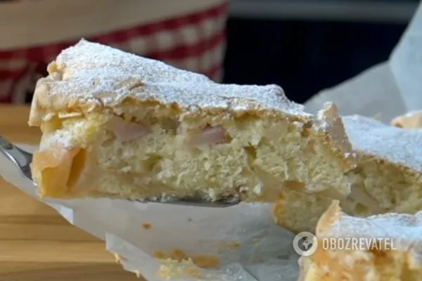

Хочется побаловать себя домашней выпечкой, а времени мало? Пожалуй, шарлотка с яблоками один из самых популярных по простоте рецептов.
Требуется всего четыре ингредиента. А в результате вы получаете идеальную выпечку, которая нежная внутри, а снаружи имеет хрустящую, бисквитную корочку. Если уже появилось желание приготовить такую вкусняшку, следуйте нашему детальному пошаговому рецепту. Готовьте с радостью!
Ингредиенты
- Пшеничная мука - 1 ст.
- Яйца - 3 шт.
- Сахар - 1 ст.
- Яблоки - 4 шт.
- Разрыхлитель - 1 ч/л
Этапы приготовления
- Первым делом готовим тесто. В отдельной посуде следует взбить яйца с сахарным песком, постепенно его подсыпая. Яичная масса должна получиться пышной и светлой. Долгое взбивание способствует образованию корочки на пироге при выпечке.
- Затем в яичную смесь медленно добавляем пшеничную муку. Миксер должен быть на минимальных оборотах. Долго взбивать не требуется. Всего на подготовку тесто уходит 6 минут.
- Теперь подготовим начинку. Яблоки очищаем, и нарезаем на плоские дольки. Яблоки лучше выбирать с кислинкой, чтобы пирог не получился слишком сладким.
- Форму для выпечки шарлотки лучше выложить пергаментом и смазать сливочным маслом. Выкладываем на дно формы подготовленные дольки яблок (можно в два слоя).
- Яблоки следует полностью покрыть тестом. Обязательно перемешиваем яблоки с тестом лопаткой, иначе может не пропечься.
- В разогретый духовой шкаф отправляем пирог. Идеальная температура для выпекания 180°С, а времени потребуется не более 40-50 минут.
- Шарлотке даем остыть и присыпаем сахарной пудрой. Наслаждайтесь!
